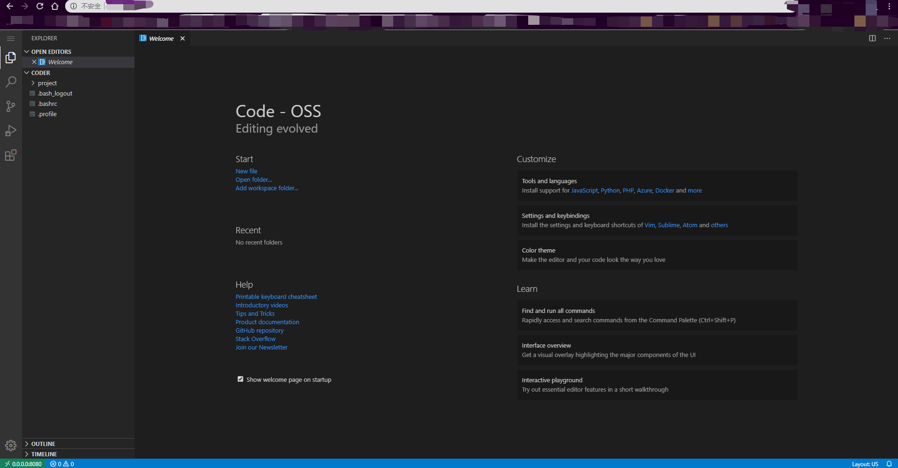
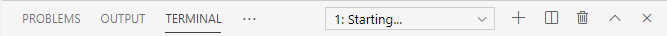

code-server是一款基于服务器端的类VScode编辑器，制作精良。为了最大化利用白嫖的服务器，我尝试配置code-server。使用code-server的具体的安装过程网上比比皆是，不赘述。我选择的是在docker中（可选）运行code-server。
毫无疑问，又遇到了问题：我可以在本地通过localhost:8080或0.0.0.0:8080访问code-server，却无法在其他设备通过服务器IP地址:8080的http地址访问。
查阅了相关资料，我决定同时安装了nginx进行端口转发，最终可以成功地通过服务器IP地址使用code-server。总的来说，主要需要安装
- nginx
- docker
- code-server-3.3.1
配置nginx
1 | vim /etc/nginx/nginx.conf |
修改配置文件如下：
1 | #/etc/nginx/nginx.conf |
更新nginx：
1 | nginx -s reload |
查看nginx运行情况：
1 | ps -ef | grep nginx |
运行code-server
最后通过命令：
1 | docker run -it -p 127.0.0.1:8080:8080 -e PA -e PASSWORD=XXXXXX -v "$PWD:/home/coder/project" -u "$(id -u):$(id -g)" codercom/code-server:latest |
在docker中运行code-server。此时，可以直接在浏览器输入服务器域名/IP地址看到code-server登录页面了！输入刚刚设定的PASSWORD，就能看到熟悉的界面：

但仍然有两个问题：
问题一
docker中的终端还未配置好，也就是说像gcc、g++等命令还没有办法使用。
To be continued.
问题二
如果不在docker中运行code-server，terminal处会一直显示Starting...，无法使用命令行！

解决办法
从code-server的Github issue以及本身的报错”Error: /lib64/libstdc++.so.6: version `GLIBCXX_3.4.20’ not found”猜测该问题是由于libstdc++.so.6的链接版本比较古老而导致的。
在~目录下执行
1 | find / -name libstdc++.so.6.0.* |
查看当前的所有libstdc++.so.6版本，结果如下：
1 | /var/lib/docker/overlay2/235493dcc7228d3925c82a6813027e38dca74e0968910dfa7489d8dc450459bb/diff/usr/lib/x86_64-linux-gnu/libstdc++.so.6.0.25 |
尝试把第一项6.0.25版本复制到/usr/lib64下进行链接，但可能是因为在docker中的版本不兼容，后续运行./code-server出现了问题。网络上找到了libstdc++.so.6.0.26资源，直接下载传输到服务器上，复制到/usr/lib64下进行链接：
1 | cp libstdc++.so.6.0.26 /usr/lib64/ |
此时再次运行./code-server，terminal可以正常加载出来了！(图略，自己想象)